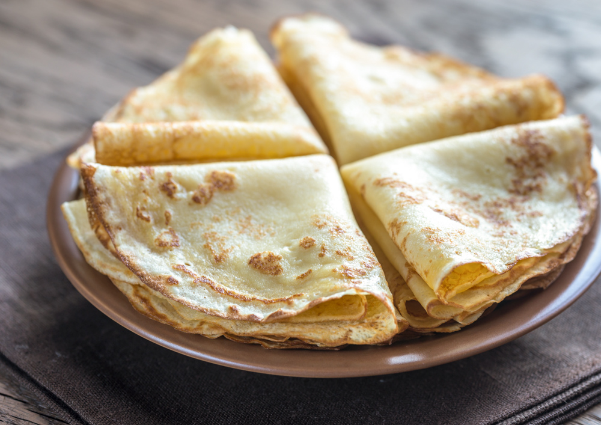

Malawax

Malawax are thin, lacy Somali crepes often enjoyed for breakfast or as a snack. They’re slightly sweet, with
hints of cardamom and nutmeg, and are served with butter, honey, or sugar.
- 2 cups all-purpose flour
- 2 cups water
- 1/2 cup milk
- 2 tbsp sugar
- 1/2 tsp ground cardamom
- 1/4 tsp nutmeg
- Pinch of salt
- Oil or butter for frying
- Mix all ingredients in a large bowl until smooth and lump-free. Let the batter rest for 10-15 minutes.
- Heat a non-stick skillet over medium heat and lightly grease with oil or butter.
- Pour a ladleful of batter into the pan, swirling to coat the surface evenly.
- Cook for about 1-2 minutes until bubbles form and the edges start to lift, then flip and cook for another 1
minute.
- Repeat with the remaining batter. Serve warm with butter, honey, or sugar.